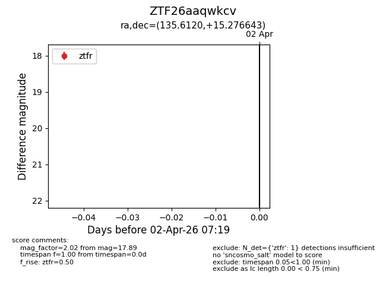
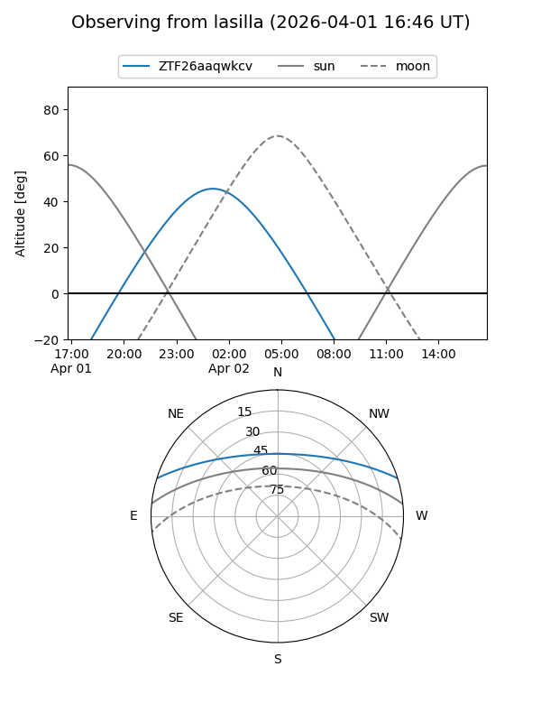
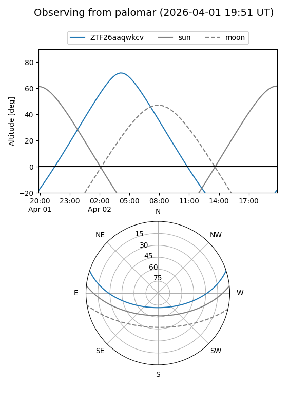
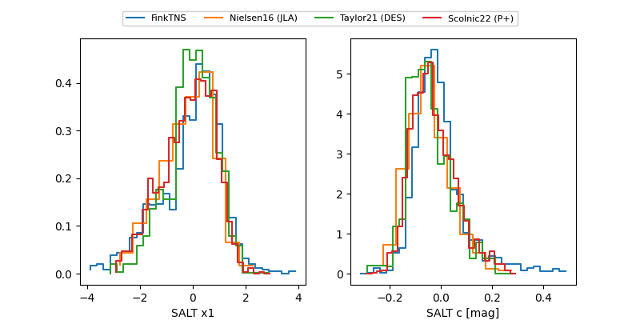

ZTF26aaqwkcv
Target ZTF26aaqwkcv at 2026-04-02 07:22
Aliases and brokers:
FINK: link
Lasair: link
ALeRCE: link
alt names
ZTF26aaqwkcv (ztf,fink_ztf)
Coordinates:
equatorial (ra, dec) = 135.6120,+15.27664
equatorial (HMS+DMS) = 09:02:26.88,+15:16:35.91
galactic (l, b) = (213.1778,+35.77634)
Flags:
Photometry:
last ztfr=17.89
1 ztfr detections
Lightcurve

Visibility


Additional plots
